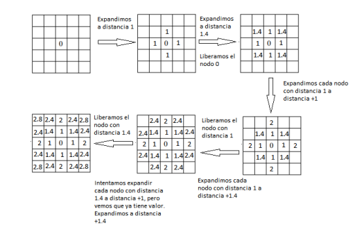

Silvia Calvo Cabello
La práctica consiste en diseñar e implementar un controlador para una máquina expendedora utilizando un Arduino UNO y diversos sensores y actuadores. La práctica consiste en diseñar e implementar un controlador para una máquina expendedora utilizando un **Arduino UNO** y diversos sensores y actuadores. Los componentes obligatorios son: LCD, joystick, sensor de temperatura/humedad (DHT11), sensor de ultrasonidos, botón, y dos LEDs.
1. Arranque
- Al iniciar, el LED1 parpadea 3 veces, y se muestra el mensaje "CARGANDO..." en el LCD.
- Tras los parpadeos, el LED1 se apaga y se muestra "Servicio" en el LCD.
2. Servicio
- Si el usuario está a menos de 1 metro de la máquina, el LCD muestra la temperatura y humedad durante 5 segundos, y luego presenta una lista de productos con precios. Los productos incluyen diferentes tipos de café y chocolate.
- El usuario puede navegar por la lista utilizando el joystick y seleccionar un producto con el botón del joystick.
- Tras seleccionar, el LCD muestra "Preparando Café..." por un tiempo aleatorio entre 4 y 8 segundos. Durante este tiempo, el LED2 se enciende de manera incremental, indicando el progreso de la preparación.
- Al terminar, el LCD muestra "RETIRE BEBIDA" por 3 segundos y vuelve al estado inicial.
3. Admin
- Se puede acceder a la interfaz de administración presionando el botón durante 5 segundos.
- En la vista de Admin, ambos LEDs se encienden y se muestra un menú con opciones para ver la temperatura, la distancia del sensor, el contador de tiempo y modificar los precios de los productos.
- Los precios se modifican utilizando el joystick y confirmando con el botón. Los cambios de precio se actualizan en el menú de selección de productos.
- Para salir de la vista Admin, el usuario debe presionar el botón nuevamente durante 5 segundos.
EXPLICACION DEL CODIGO
Mapa de costes: Se calcula mediante el método de busqueda BFS, y siendo el valor del coste, la distancia al target, como se muestra en la siguiente imagen:

Para calcular la distancia, se almacena en cada nodo a explorar tanto su nueva posición como el nodo padre al que pertenece. De esta manera, se calcula la distancia desde el nodo actual hasta su nodo padre, y este valor se suma al coste acumulado del nodo padre.
El orden en el que se recorren los nodos hijos es crucial para garantizar una correcta suma de los píxeles. Es importante inspeccionar primero las posiciones adyacentes y a continuación, las esquinas, siguiendo el patrón de recorrido: [0,-1], [0,1], [1,0], [-1,0], [-1,-1], [-1,+1], [1,1], [1,-1].
Tambien hay que añadir inf de coste a los obstaculos, para asi, que en la navegación nunca vaya por ahí.
Mapa de obstáculos:Para calcular los obstáculos, se recorren los nodos añadidos previamente a una cola durante el cálculo del mapa de costes. A los píxeles adyacentes a estos nodos (siempre que no sean también obstáculos) se les asigna un coste adicional como penalización.
En la navegación de este proyecto, se evalúa continuamente el píxel de menor coste dentro de un radio X alrededor del coche. A partir de esta información, se calcula el ángulo entre la posición actual y la posición final, considerando la orientación del robot. Este ángulo determina la velocidad angular del coche.tual y la final, teniendo en cuenta hacia donde mira el robot, y esa es la velocidad angular del coche
Paso de coordenadas Worl a Map y viceversa:
El mapa se representa como una matriz en la que las coordenadas se almacenan de izquierda a derecha y de arriba hacia abajo. En cambio, en el mundo real, la coordenada (0,0) corresponde al punto de inicio del coche (ubicado en el centro del mapa). Debido a esto, las coordenadas no coinciden directamente entre ambos sistemas. Además, debido a las diferencias en los sistemas de referencia, las coordenadas x y están intercambiadas: lo que en uno corresponde a la x, en el otro es la y, y viceversa.
Representacion del mapa:
Los costes se calculan en una matriz que admite decimales, pero en la represenacion del mapa, este solo admite enteros de 0 a 255, por lo que se hace una conversion y un grimpado para su correcta visualizacion.
Cambiar de target:
Esta práctica se ha implementado de tal forma que una vez selecionado el target, no va a cambiar hasta que llegue al objetivo, y una vez alcanzado este, ya vuelve a calcular para el siguiente.
Cálculo del cost_map:
Realicé varias pruebas en las que los resultados no eran correctos debido al orden en el que se recorrían los nodos hijos, como se mencionó anteriormente. Inicialmente, para familiarizarme con la conversión entre el mapa y el sistema de coordenadas del mundo, comencé calculando la distancia de cada píxel al objetivo sin usar BFS. Este enfoque me permitió entender mejor la relación entre ambos sistemas de coordenadas. Posteriormente, el cálculo final del mapa de costes se realiza utilizando BFS, tal como se explicó previamente.
Cálculo del wall_map:
Para calcular el mapa de obstáculos, al principio no tomaba en cuenta los obstáculos detectados por el cost_map y realizaba el cálculo sobre todo el mapa. Más adelante, optimicé este proceso, descartando las áreas donde no se había calculado el coste, lo que mejoró la eficiencia del algoritmo.
Navegación:
Al principio, para determinar las casillas hacia las cuales se dirigía el coche, utilicé un enfoque en el que el vehículo se desplazaba de un píxel a otro, buscando siempre el píxel de menor coste. El coche llegaba a ese píxel, luego buscaba el siguiente con menor coste, y así sucesivamente. Este método ocasionaba que, en ocasiones, el coche se girara inesperadamente debido al error mencionado anteriormente en el orden de los nodos hijos. Una vez corregido este problema, la navegación mejoró significativamente.
Problema de ir hacia arriba:
Una vez hecho todo el proyecto, este no funcionaba al dirigirse hacia arriba en remoto y nunca iba en local, esto se debia al coste de los obstaculos (0) por lo que al intentar navegar se dirigía hacia las posiciones donde había obstáculos. Para solucionarlo, añadí que el coste fuese infinit por donde no pudiese ir el coche.
A continuacion se puede ver el funcionamiento del coche recorriendo la ciudad con varios objetivos.